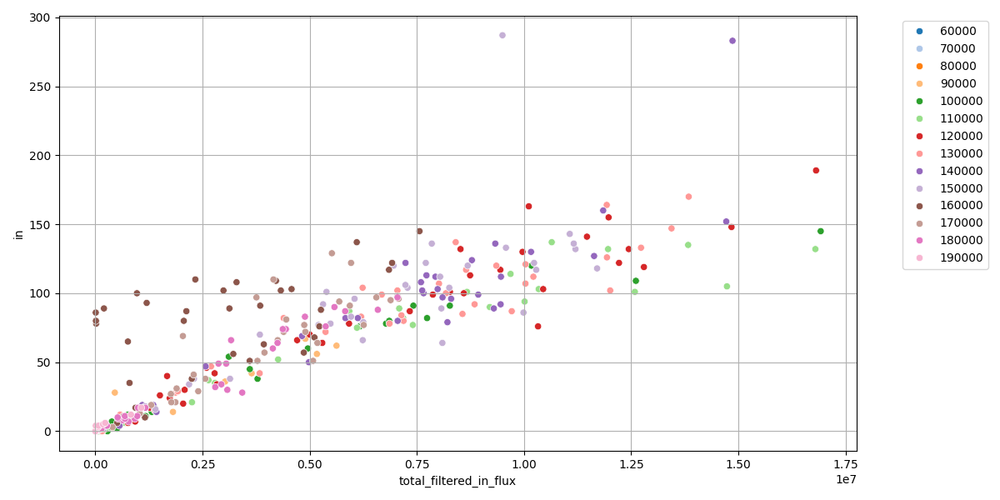
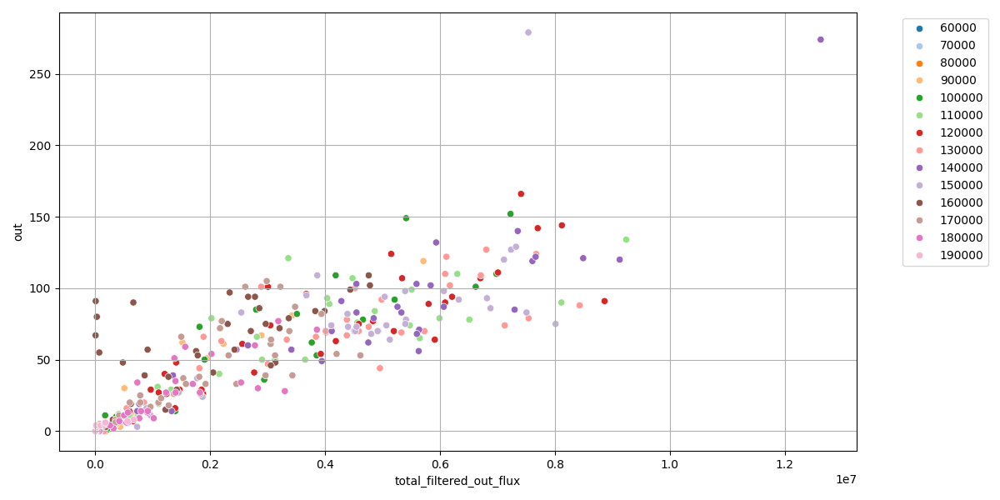

벌을 찾는 대신, 입구를 통과하는 움직임을 잰다
이 프로젝트는 벌 한 마리씩을 탐지하거나 ID tracking하지 않는다. 벌통 입구 경계 주변에서 optical flow를 계산하고, 그 움직임이 안쪽인지 바깥쪽인지 나누어 3초 단위 활동량으로 요약한다.
이 프로젝트의 핵심 질문은 세 가지다
팀원이 세부 알고리즘을 모르더라도 이 세 질문을 잡으면 전체 구현을 따라갈 수 있다.
어디를 볼 것인가?
전체 영상이 아니라 벌통 입구 주변 ROI와 입구 사각형만 본다.
어떤 움직임인가?
입구 경계에 수직인 방향으로 들어가거나 나오는 움직임만 합산한다.
믿을 수 있는가?
짧은 spike와 작은 움직임 조각을 필터링해 노이즈를 줄인다.
코드의 전체 흐름
`process_video()`는 영상 입력부터 CSV와 preview video 생성까지 한 번에 수행한다.
Video
OpenCV로 frame을 순서대로 읽는다.
ROI
벌통 입구 주변 영역만 crop한다.
Optical flow
이전 frame과 현재 frame의 움직임 벡터를 계산한다.
Boundary flux
입구 normal 방향으로 IN/OUT flux를 나눈다.
Filtering
blur, persistence, area filter로 노이즈를 억제한다.
Output
frame CSV, 3초 window CSV, preview video를 저장한다.
각 pixel의 이동 벡터를 구한다
Farneback optical flow는 frame 사이에서 이미지 texture가 어느 방향으로 얼마나 움직였는지 추정한다.
flow[y, x] = (dx, dy)
mag = sqrt(dx * dx + dy * dy)입구 경계에 수직인 움직임만 세어야 한다
입구 사각형의 경계 주변 얇은 band를 만들고, optical-flow 벡터를 경계 normal 방향으로 투영한다.
Positive normal flow
입구 안쪽을 향하면 `IN` flux로 합산한다.
Negative normal flow
입구 바깥쪽을 향하면 `OUT` flux로 합산한다.
현재 작업의 우선순위는 count logic보다 flux 신호 안정화다
이전 event detector 접근은 문서화되어 있지만, 지금 구현은 노이즈가 count로 바뀌기 전에 optical-flow 후보 자체를 정리하는 데 집중한다.
Raw flux를 그대로 쓰면
- 조용한 영상도 activity가 큰 것처럼 보일 수 있다.
- 압축 artifact와 조명 변화가 flux로 들어온다.
- 느린 움직임이나 흔들림이 과대 누적될 수 있다.
먼저 필터링하면
- 짧은 spike를 줄인다.
- 작고 흩어진 움직임 조각을 제거한다.
- 활동량 추정 전에 신호를 비교 가능한 형태로 만든다.
모든 flow를 쓰지 않고 조건을 통과한 pixel만 사용한다
입구 경계 주변에 있고, 움직임 크기가 충분하며, normal 방향 성분도 충분한 pixel만 raw candidate가 된다.
candidate = (
counting_boundary_band
& (mag > flow_mag_threshold)
& (abs(normal_flow) > normal_flow_threshold)
)1. boundary band
입구 주변 top/bottom/left/right 얇은 영역에 있는가?
2. magnitude
움직임의 전체 크기가 threshold보다 큰가?
3. normal flow
입구 안팎 방향 성분이 threshold보다 큰가?
짧은 spike와 작은 조각을 제거한다
현재 핵심 필터는 Gaussian blur, temporal persistence, optional component area filter다.
Gaussian blur
작은 pixel 노이즈와 compression texture를 줄인다.
Persistence
한 frame짜리 spike보다 여러 frame 지속되는 움직임을 우선한다.
Area filter
연결된 component가 너무 작으면 제거한다.
프레임 flux를 3초 단위 활동량으로 압축한다
`filtered_in_flux`와 `filtered_out_flux`를 window별로 합산하고, flux unit으로 나누어 count estimate를 만든다. 이 값은 calibration 전에는 실제 마릿수가 아니라 활동량 지표다.
filtered_in_count_est =
filtered_in_flux_sum / in_bee_flux_unit
filtered_out_count_est =
filtered_out_flux_sum / out_bee_flux_unit빨강은 raw flux, 초록은 filtered flux를 뜻하는 예시 시각화다.
코드는 두 축으로 보면 된다
알고리즘은 `bee_entrance_count.py`, 실험 반복과 평가 흐름은 `main.py`가 맡는다.
옵티컬 플로우 추정값과 실제 계수값 비교
하나의 벌통에 대해 optical flow로 계산한 결과값을 x축에, 사람이 실제 계수한 이출입량을 y축에 둔 산포도다.


현재 기본 실행은 `selected` preset이 중심이다
`Config` 기본값은 비교적 부드럽고, `src/main.py`의 `selected` preset은 더 강한 필터링을 사용한다.
Config 기본값
blur_kernel = 3
flow_mag_threshold = 0.30
normal_flow_threshold = 0.08
preview_panel_width = 360
use_persistence_filter = True
persist_decay = 0.65
persist_threshold = 1.3
use_component_area_filter = Falseselected preset
blur_kernel = 5
flow_mag_threshold = 1.0
normal_flow_threshold = 0.5
use_component_area_filter = True
min_flow_component_area = 200좋은 결과인지 판단하는 기준
정확한 수치를 보기 전에, preview와 CSV가 같은 이야기를 하는지 확인해야 한다.
Preview에서 볼 것
- ROI와 entrance rectangle이 실제 입구에 맞는가?
- cyan counting band가 top/bottom/left/right에 보이는가?
- flow arrow 방향이 실제 벌 이동과 맞는가?
- 활동 구간에서 실제 움직임이 필터에 지워지지 않는가?
CSV에서 볼 것
- raw보다 filtered flux가 적절히 줄었는가?
- 조용한 영상의 filtered traffic이 낮고 안정적인가?
- 활발한 영상의 filtered traffic은 충분히 살아 있는가?
- truth label과 비례 관계가 있는가?
다음 단계는 좌표, 노이즈, truth calibration 순서가 좋다
필터만 계속 조정하기 전에 좌표와 IN/OUT 정의가 맞는지 먼저 확정해야 한다.
좌표 검증
`roi_ent_info.txt`와 `Config` 좌표 차이를 정리하고 영상별 preview로 확인한다.
노이즈 영상
low-activity 영상에서 filtered flux가 낮고 안정적인지 본다.
활동 영상
강한 필터가 실제 벌 움직임을 없애지 않는지 확인한다.
Truth CSV
사람이 직접 센 `video,in,out` label을 만든다.
Tune
`uv run python -m src.main --mode tune`로 preset과 threshold를 비교한다.
정리하면, 이 프로젝트는 경계 통과 흐름을 안정적으로 측정하는 실험이다
개별 벌 탐지가 아니라 입구 경계에서의 방향성 있는 움직임을 재고, 노이즈를 줄여 시간 구간별 활동량을 만든다.
입구 경계를 정확히 잡기
ROI와 entrance rectangle이 틀리면 이후 계산은 모두 흔들린다.
normal 방향 flux만 합산
입구를 통과하는 방향성 있는 움직임이 핵심 신호다.
노이즈와 실제 움직임 균형
조용한 영상은 낮게, 활동 영상은 살아 있게 만드는 설정을 찾는다.